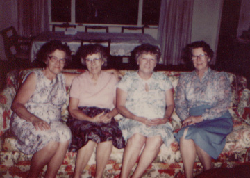

|
|
Maude Marie Revis was born 22 December 1911 to James and Idella Revis. She was the sixth among eight children. |
| Maude married John Francis Suess and together made a home in Townsend, MD where they had three children. |

Mattie, Mayme, Mildred, and Maude |